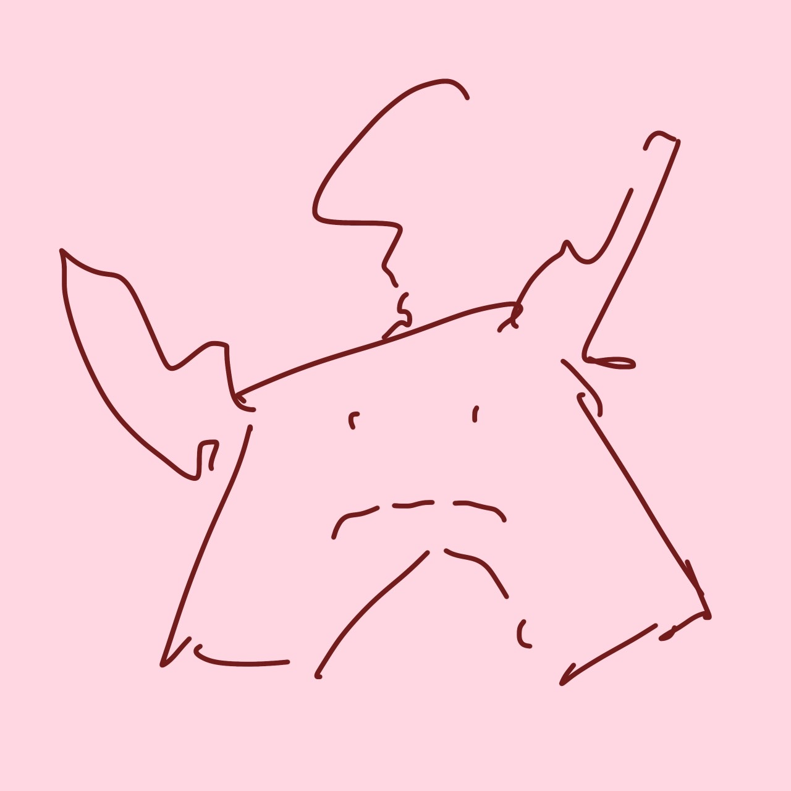
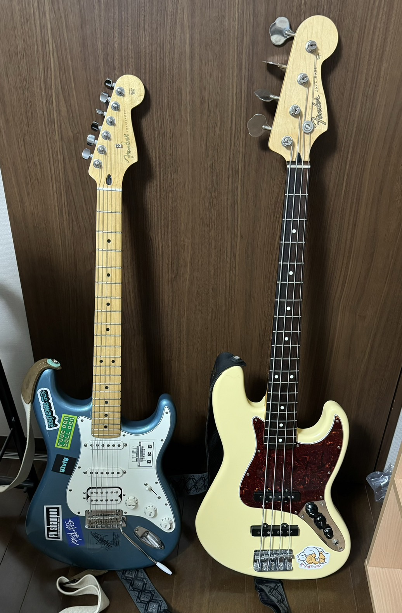
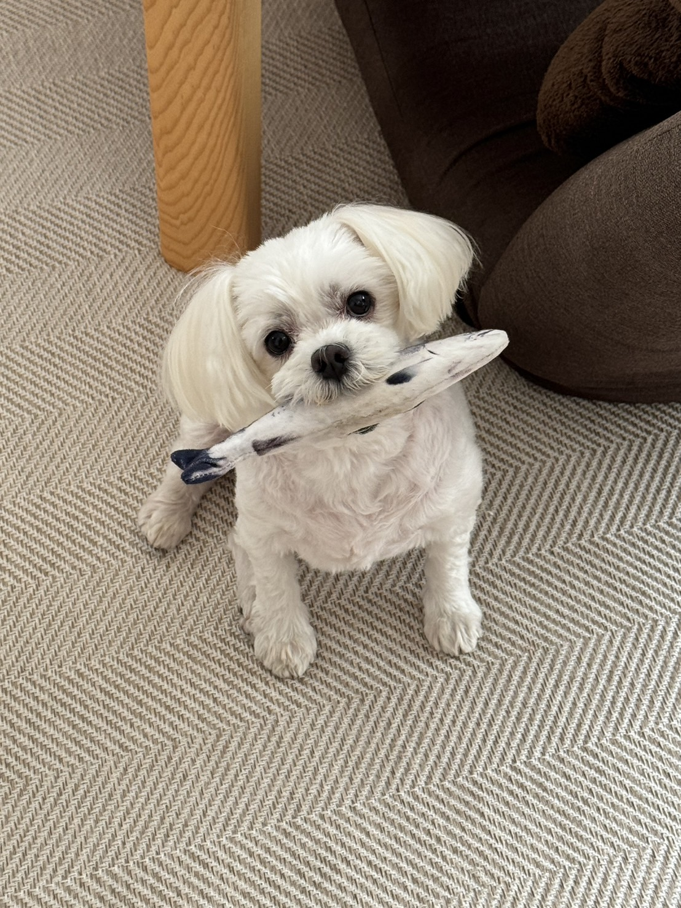

kiyomakiのプロフィール

（画像についてひとこと：テキトーに描いたアイコンです．気に入ったのでプロフィールで使ってます．）
所属など
軽音のサークルに所属していて，ベースとギターを弾いています．
アルバイトは塾講師をしています.

趣味や属性
楽器と曲作り，バスケットボールが趣味です．
たまに絵も描きます．犬を飼ってます.
https://www.youtube.com/@suen_chang ←作った曲

バンド
ここら辺のバンドが好きです.
この内３つのバンドは解散してしまっていて悲しいです.
その他
使用PC
普段はLinuxのUbuntuを使用していますが, Windows環境ではPowerShellを使用します.
PC利用経験や、普段の使い方
ノートPCは大学の授業や課題での使用がメインで, Excel, PowerPoint, Word, ChatGPTを主に使います.
デスクトップの方のPCは曲作りや楽器を練習する時に使います.
自分の強みや弱みなど
強み：好奇心が旺盛です．
弱み：長時間,人の話を聞きつづけるのが苦手です.
TECH-BASE参加にあたり、意気込み
すいません! 9/6まで忙しく時間が取れないので,翌日以降から追い込んでいきます.
初めの数日は迷惑をかけるかもしれませんが,よろしくお願いします.
このページのTOPへ / ググる